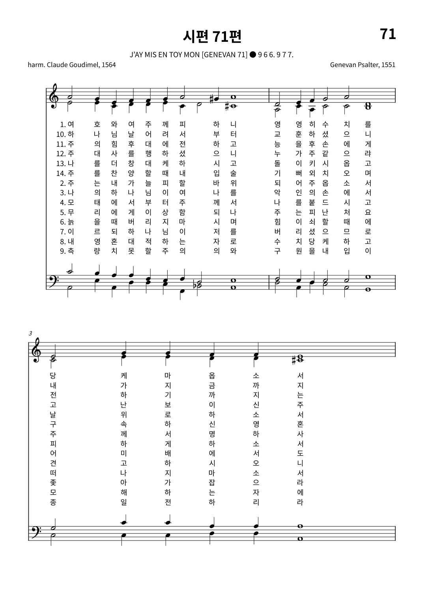
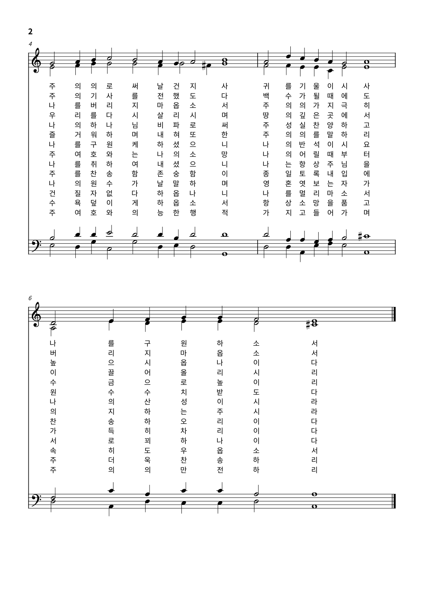

시편 71편
J’AY MIS EN TOY MON [GENEVAN 71] · 9 6 6. 9 7 7.
곡조: Genevan Psalter, 1551 · 화성: Claude Goudimel, 1564 · 가사: 개역한글판 시편 71편 편역(AI 초벌 편역판 · 신학 감수 전) · 14절
악보 PDF MusicXML(출력용) MusicXML(반주용, 전주·반복 포함) 개역한글 시편 71편 읽기
악보


가사
1절
여호와여 주께 피하니
영영히 수치를
당케 마옵소서
주의 의로써 날 건지사
귀를 기울이시사
나를 구원하소서
여호와여 주께 피하니
영영히 수치를
당케 마옵소서
주의 의로써 날 건지사
귀를 기울이시사
나를 구원하소서
2절
주는 내가 늘 피할 바위
되어 주옵소서
주께서 명하사
나를 구원케 하셨으니
나의 반석이시요
나의 산성이시라
주는 내가 늘 피할 바위
되어 주옵소서
주께서 명하사
나를 구원케 하셨으니
나의 반석이시요
나의 산성이시라
3절
나의 하나님이여 나를
악인의 손에서
피하게 하소서
주 여호와는 나의 소망
나의 어릴 때부터
의지하는 주시라
나의 하나님이여 나를
악인의 손에서
피하게 하소서
주 여호와는 나의 소망
나의 어릴 때부터
의지하는 주시라
4절
모태에서부터 주께서
나를 붙드시고
어미 배에서도
나를 취하여 내셨으니
나는 항상 주님을
찬송하오리이다
모태에서부터 주께서
나를 붙드시고
어미 배에서도
나를 취하여 내셨으니
나는 항상 주님을
찬송하오리이다
5절
무리에게 이상함 되나
주는 피난처요
견고하시오니
주를 찬송함 존숭함이
종일토록 내 입에
가득히 차리이다
무리에게 이상함 되나
주는 피난처요
견고하시오니
주를 찬송함 존숭함이
종일토록 내 입에
가득히 차리이다
6절
늙을 때 버리지 마시며
힘이 쇠할 때에
떠나지 마소서
나의 원수가 날 말하며
영혼 엿보는 자가
서로 꾀하나이다
늙을 때 버리지 마시며
힘이 쇠할 때에
떠나지 마소서
나의 원수가 날 말하며
영혼 엿보는 자가
서로 꾀하나이다
7절
이르되 하나님이 저를
버리셨으므로
좇아가 잡으라
건질 자 없다 하옵나니
나를 멀리 마소서
속히 도우옵소서
이르되 하나님이 저를
버리셨으므로
좇아가 잡으라
건질 자 없다 하옵나니
나를 멀리 마소서
속히 도우옵소서
8절
내 영혼 대적하는 자로
수치 당케 하고
모해하는 자에
수욕 덮이게 하옵소서
항상 소망을 품고
주 더욱 찬송하리
내 영혼 대적하는 자로
수치 당케 하고
모해하는 자에
수욕 덮이게 하옵소서
항상 소망을 품고
주 더욱 찬송하리
9절
측량치 못할 주의 의와
구원을 내 입이
종일 전하리라
주 여호와의 능한 행적
가지고 들어가며
주의 의만 전하리
측량치 못할 주의 의와
구원을 내 입이
종일 전하리라
주 여호와의 능한 행적
가지고 들어가며
주의 의만 전하리
10절
하나님 날 어려서부터
교훈하셨으니
내가 지금까지
주의 기사를 전했도다
백수가 될 때에도
버리지 마옵소서
하나님 날 어려서부터
교훈하셨으니
내가 지금까지
주의 기사를 전했도다
백수가 될 때에도
버리지 마옵소서
11절
주의 힘 후대에 전하고
능을 후손에게
전하기까지는
나를 버리지 마옵소서
주의 의가 지극히
높으시옵나이다
주의 힘 후대에 전하고
능을 후손에게
전하기까지는
나를 버리지 마옵소서
주의 의가 지극히
높으시옵나이다
12절
주 대사를 행하셨으니
누가 주 같으랴
고난 보이신 주
우리를 다시 살리시며
땅의 깊은 곳에서
이끌어 올리시리
주 대사를 행하셨으니
누가 주 같으랴
고난 보이신 주
우리를 다시 살리시며
땅의 깊은 곳에서
이끌어 올리시리
13절
나를 더 창대케 하시고
돌이키시옵고
날 위로하소서
나의 하나님 비파로써
주 성실 찬양하고
수금으로 높이리
나를 더 창대케 하시고
돌이키시옵고
날 위로하소서
나의 하나님 비파로써
주 성실 찬양하고
수금으로 높이리
14절
주를 찬양할 때 내 입술
기뻐 외치오며
구속하신 영혼
즐거워하며 내 혀 또한
주의 의를 말하리
원수 수치 받도다
주를 찬양할 때 내 입술
기뻐 외치오며
구속하신 영혼
즐거워하며 내 혀 또한
주의 의를 말하리
원수 수치 받도다